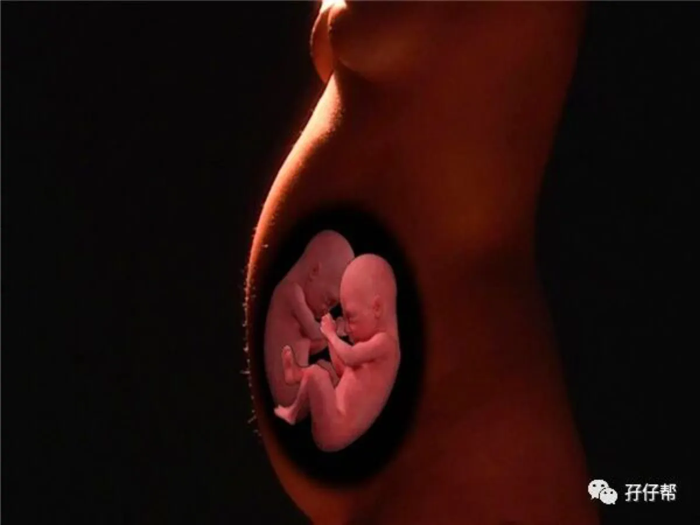
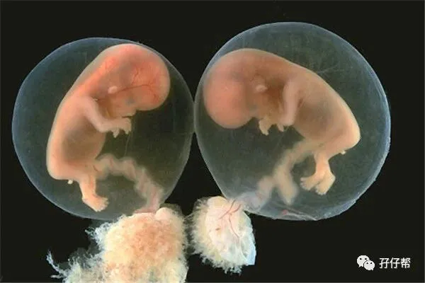
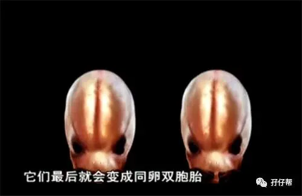

文|圆圈妈，一个文思如尿崩的双胎妈妈
图|来自网络，如有侵权，请联系删除
文献参考|《2017年美国放射学会多胎妊娠超声检查指南解读》
· 正 · 文 · 来 · 啦 ·
近日收到一双胎孕妈的求助，孕16周做B超发现绒毛膜性居然从双绒变成单绒了。
以下是她在不同孕周做的B超检查结果提示：
孕8周/单绒双羊，孕10周/双绒双羊，孕12周/双绒双羊，孕16周/单绒双羊。
这位孕妈的情况并非个案，而是非常普遍，我已经不止一次收到这种绒毛膜性变来变去的求助咨询了。
其实并不是绒毛膜性质发生变化，而是胎盘在变化。
但不是胎盘数量发生变化，而是原本分开的两个胎盘随着孕周的发展渐渐融合在一起了，甚至“长”在一起”，很容易让人误以为只有一个胎盘。
而且每次的测量仪器，测量角度以及医生的超声水平不一样，都极有可能导致误诊。
往期文章《官宣：双绒双羊，单绒双羊，单绒单羊傻傻分不清？一篇消除你所有疑问》主要讲了双胞胎的分类，这一篇再继续说说关于双胎妊娠那些容易让人混淆，误解的几个概念，以及几个概念之间的关系。
看完这篇文章后，你基本上能看懂双胎的B超报告单内隐藏的一些信息，比如同卵还是异卵，单绒还是双绒，一个胎盘还是两个胎盘。
绒毛膜与合子性（卵）性的关系
单绒=同卵（所有的单绒毛膜都是同卵双胎）
双绒=2/3异卵+1/3同卵双胎的双绒毛膜
注意：大多数的双绒都是异卵，只有1/3概率的同卵双胎中会出现双绒毛膜。
同卵双胎的双绒毛膜：一个受精卵在胎盘还没形成时就已经分裂了，这种情况下，会发育成两个绒毛膜，两个胎盘，即双绒双羊。
这里的“绒”指的是绒毛膜，“羊”指的是羊膜囊。
因为这种情况极少见，让大多数人都觉得双绒双羊一定是异卵，但其实双绒双羊也有可能是同卵双胞胎。
绒毛膜与胎盘的关系
双绒双羊=两个胎盘
单绒单羊=一个胎盘（没有羊膜分隔）
单绒双羊=一个胎盘（有羊膜分隔）
胎盘与合子性（卵）性的关系
两个胎盘≠异卵双胎
一个胎盘=同卵双胎
注意：必须是真正意义上的“一个胎盘”而不是两个融合在一起的胎盘
胎儿性别与合子性（卵）性的关系
若两宝宝出生后，你还不知道他们是同卵还是异卵，可凭性别和外观判断。
性别不一样/百分百异卵
性别一样，外观特征不一样/异卵
性别一样，外观特征一样/同卵
这只是常规判断，因人而异。
双胞胎喂养群有宝妈说两宝宝明明同卵，可是越长越不一样。
首先要排除是不是你个人的心理作用，毕竟看久了，习惯了，确实很容易就能分辨出来，然后就觉得越看越不像。
其次，如果真的很明显长得不一样，那就拿出产检B超报告单或者生产记录仔细看看，也许能从中找到些线索。
#尽早确定绒毛膜性
双胞胎孕期群总有人问两胎儿孕周相差一周多，怎么办，严不严重？
我首先想知道你是单绒还是双绒，不然没办法给意见。
《2017年美国放射学会多胎妊娠超声检查指南解读》中提到，评估绒毛膜性和羊膜囊性早孕期确定绒毛膜性和羊膜囊性至关重要。
早孕期孕囊数量等于绒毛膜数量，其准确率几乎为100%，所以早孕期确定绒毛膜性尤其是双绒毛膜性是最准确的。-----来源：中国实用妇科与产科杂志2018年7月第34卷第7期
早孕期（孕6—9周之间）最容易判断绒毛膜性，只需要看孕囊（妊娠囊）数量即可得知绒毛膜性。
一个孕囊内，有两个卵黄囊，即单绒。
两个孕囊内，分别有两个卵黄囊，即双绒。
早孕期确定是否为单绒毛膜双胎，就可以同时对双胎输血综合症进行预测，预测是否会发生可怕的双胎输血和选择性宫内发育不良等问题。 -----来源：广医三陈敏
这就是说，当发现两胎儿生长不一致时，若你是双绒双羊，那你几乎可以把TTTs忽略不计，少操一份心了。
为避免这种绒毛膜性变来变去的乌龙事件，强烈建议孕妈不要随意更换产检医院。
建档医院和产检医院尽量保持一致，医生有孕妈的B超历史记录做参考会避免很多误区。
#产检医生的重要性
前几天看到一孕妈的B超单，详情描述明明显示是两个胎盘，还看到双胎峰了，居然在最后的B超提示说是单绒双羊。
我勒个去！
难怪医患关系这么紧张，这么明显的错误真的让人忍不住火冒三丈。
双胎妊娠的超声检查很考验一个医生的技术能力，然而医生的超声水平良莠不齐，我们没有办法选择和甄别，但若在大医院，我们遇到有资质，高水平的医生的几率必定会高一些。
至少在大医院，当得知你是双胎，会特别安排能力较强，经验丰富的医生给你仔细检查，而不是让一个连绒毛膜性都一问三不知的医生草草地在你肚子上探一探那么敷衍。
尤其是到了中孕期才开始做超声检查的孕妈，胎盘都长一块去了，若不是火眼金星，真不晓得这胎盘是原本只有一个还是有两个被挤到一块。
这就真的很需要超高技术的医生用专业的眼神通过其他特征去识别。
SO，那些看不出绒毛膜性的医院还是别去了，省得添堵还浪费钱，赶紧转诊至三级胎儿医学中心复查B超，直到确诊为止。
千万别稀里糊涂得不知道啥是单绒和双绒，这要没啥事就阿弥陀佛，这真有啥事了就真的哭都来不及。
#储备双胎科普知识才是王道
有人说，少问度娘，多看老娘。
这句调侃话看着好笑但却赤裸裸地道出了度娘里的信息太以偏概全，以点看面了。
我接触到的双胎孕妈加我微信后第一句话就是：“刚查出怀上双胎，看到网上说得很恐怖，好担心！好害怕！”
哎….姑娘，你这是何苦呢？
少看度娘，多看科普。
只要你认识字，完全可以读懂科普文献，靠自己的力量，揭开双胎妊娠神秘的面纱。
我觉得吧，既然咱摊上“双蛋黄”这件大事了，就得有点准备。
比如，储备点基本的简单的双胎科普常识，多看孖仔帮的双胎孕育知识（哈哈…做下广告）才不至于被人牵着鼻子走。
还有啥疑问？快来加入双胞胎孕期群，一起探讨交流双胎孕期那些囧人囧事吧！
此文经过圆圈妈收集整理，不是专业科普文，只适合没有医学基础的双胞胎家庭和对双胞胎很好奇的人群阅读。
最后，特别鸣谢双胞胎爸爸群里一宝爸分享的科普文献《2017年美国放射学会多胎妊娠超声检查指南解读》，有兴趣阅读的亲们，可以私我发电子档哈！
文章中提到的一些概念和双胞胎知识点，有兴趣深入探究的小伙伴可以继续追踪原文来源阅读。
http://www.multiplebirths.org.uk/identical.asp
http://enjoypregnancyclub.com
https://www3.ha.org.hk/pwh/index.asp
http://www.gy3y.com/xwzx/mtjj/a_101129.html
https://mp.weixin.qq.com/s/yO4ovvOJRkCxdhiNO6YDFw
-END-
重磅互动
#你希望写什么育儿经验干货？#
评论区聊一聊
随便提，万一下篇就写了呢？
关于这个号
谢谢关注！
我是圆圈妈
85后，全职妈妈
家有孖仔两枚，圆圈&圈圈
双胞胎育儿公众号：孖仔帮
ID:twinsbang
旨意分享双胞胎育儿经验帮助双胞胎家庭
有经验可循
有组织可靠
希望我的经验对您有所启发
期待与您一起共享双胞胎育儿经


